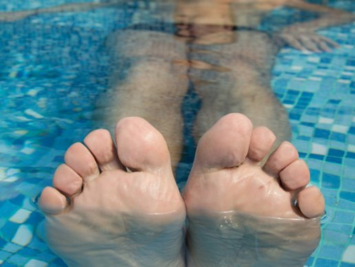

Conosci DANIELE?

Blog di Daniele Pennisi: Soluzione professionale per i funghi ai piedi!
Ciao! Molti di voi mi conoscono da molto tempo. Sono un nuotatore professionista nonché membro della squadra nazionale di nuoto.
Oggi vorrei gettare un po’ di luce su una parte importante della vita sportiva, ovvero le malattie professionali. Personalmente ho sofferto di una di queste: la micosi ai piedi.
Si tratta di una delle patologie più brutte e fastidiose che rovinano la vita esteticamente. Ho provato tantissimi trattamenti: medicina popolare, farmaci e yoga. Sono un vero professionista in questo settore.
Non voglio spaventarvi, miei cari follower, voglio solo che prestiate particolare attenzione a questo problema super-importante.
Eliminare il rischio delle infezioni da fungo è molto semplice, e quando l’infezione è già presente la si può curare (come è stato scoperto). La cosa più importante è conoscere i modi e i mezzi, che adesso vi svelerò.
Voglio parlarvi di questo problema in base alla mia esperienza personale.
Già nel 2009 ho dovuto ritirarmi temporaneamente dal nuoto professionale perché la mia infezione micotica era peggiorata tantissimo e mi avevano detto di evitare qualsiasi attività acquatica. È per questo motivo che ho iniziato a provare farmaci e maschere fatte in casa, ma tutto in vano: la malattia stava progredendo.

Nel 2010 ho fatto un'operazione. Speravo tanto che sarei ritornato a fare sport, pensavo che il bisturi avesse risolto tutti i miei problemi.
Ma le mie speranze non si sono avverate: la malattia era tornata e dovevo cercare altre soluzioni.

Dopo sei mesi di trattamenti senza successo ho gettato la spugna me ne sono caduto in depressione.
Ed ecco come un atleta promettente si era trasformato in un allenatore per bambini.
Sono stato salvato dalla depressione grazie a una gara svoltasi in Canada.
Come allenatore giovane, mi interessava ascoltare i colleghi più grandi provenienti da diverse parti del mondo. Una di loro, Chloe Leach, è diventata il mio guru e più volte mi ha aiutato in diverse situazioni.
Le ho raccontato il mio problema, di come mi aveva fatto dimenticare la mia carriera d’atleta. Di certo non mi aspettavo che tutto questo la facesse ridere!
Risulta che in Canada i funghi ai piedi non sono più una malattia, bensì un “intoppo” facilmente curabile.
Come professionista qualificata, Chloe ha spesso dovuto affrontare problemi, e la micosi del piede era l’ultimo di questi.
In molti anni di pratica ha trovato il modo più efficace per curare questa malattia: un semplice spray contenente un mix di ingredienti naturali: Onixan Spray.
Dal momento che non avevo nulla da perdere, ho deciso di provarla. L’ho comprato in Canada in una farmacia, ho pensato: “potrebbe essere utile, non si sa mai”.
Il risultato è stato piuttosto rapido.
Dopo 3 giorni ho notato i primi risultati. All’inizio mi sono spaventato un po’ perché la mia pelle era diventata squamosa.
La mia amica mi ha assicurato che era del tutto normale: la pelle vecchia e danneggiata aveva cominciato a staccarsi e il processo di rigenerazione della pelle nuova e sana era iniziato.
In effetti, era diventata morbida e liscia, come se non avesse mai avuto alcun fungo.
Dopo 3 settimane il mio medico ha dichiarato che ero guarito completamente, il che per me significava poter ricominciare a nuotare.
Ero elettrizzato! Un semplice spray, alla portata di tutti, mi aveva salvato da un grosso problema.
Tornato a casa, ho scoperto che le nostre farmacie non vendono Onixan Spray ma che si può ordinare solo sul sito web ufficiale.
Se non fossi andato in Canada e non avessi incontrato Chloe, non avrei mai conosciuto questo rimedio conveniente e soprattutto efficace chiamato Onixan Spray.
Non vi sto obbligando a comprarlo, ma per via della sua disponibilità vale la pena provare Onixan Spray È piuttosto strano che un prodotto così figo sia ancora sconosciuto ai più e che le farmacie ancora non lo vendano.
Per chi fosse interessato, ecco il link del sito web ufficiale di Onixan Spray. Scrivete pure i vostri commenti e condividete i risultati: la vostra opinione è molto importante per me.
Ordina
Commenti
Massimo
Ho speso un sacco di soldi in qualsiasi tipo di spray costoso ed economico, ho avuto sì dei miglioramenti, ma non sono guarito al 100%. Un giorno ho trovato su internet Onixan Spray e ho deciso di ordinarlo. In sole due settimane ho detto addio all’infezione.
Chiara
Anch’io ho avuto questo problema “grazie” agli esercizi del mio istruttore. Onixan Spray mi ha salvata immediatamente. Ora la consiglio a tutti i miei ragazzi, anche come prevenzione.
Giorgia
Anch’io volevo andare in piscina, ma avevo paura di contrarre una schifezza simile. Mia mamma mi ha dato la spray Onixan Spray. Che uso prima e dopo essere entrata in acqua (elimina il rischio di esposizione a qualsiasi tipo di virus). Consiglio a tutti di comprarlo, non ve ne pentirete.
Eleonora
Grazie per il tuo post! Ero disperata perché non riuscivo mai a sbarazzarmi di questa infezione. Adesso la ordino! Grazie mille.
Cristina
Onixan Spray ha aiutato anche me. Ecco qui il risultato, visibilissimo!
Roberta
Ho sofferto di micosi per molto tempo, spero vivamente che questa spray mi aiuti. La ordino!
Paola
Non posso usare nient’altro perché nient’altro aiuta. A proposito, risolve ed elimina anche le micosi alle unghie in qualsiasi stadio, è un rimedio universale.
Enrico
Avevo da poco deciso di andare dal medico e persino dal chirurgo, avevo messo via una bella sommetta... ma ora non ne ho più bisogno! È difficile crederci ma sono guarito in soli 2 mesi! Quindi non siate ridicoli, nessuna pillola vi aiuterà! Basta solo questo prodotto, non conosco altri metodi e non li voglio conoscere.
Veronica
Ho trovato questo articolo per caso e cosa vedo? Che stanno parlando del nostro spray! Beh, non che sia proprio mio, l’ho comprata per mio marito. Il risultato? In due settimane la micosi è scomparsa!